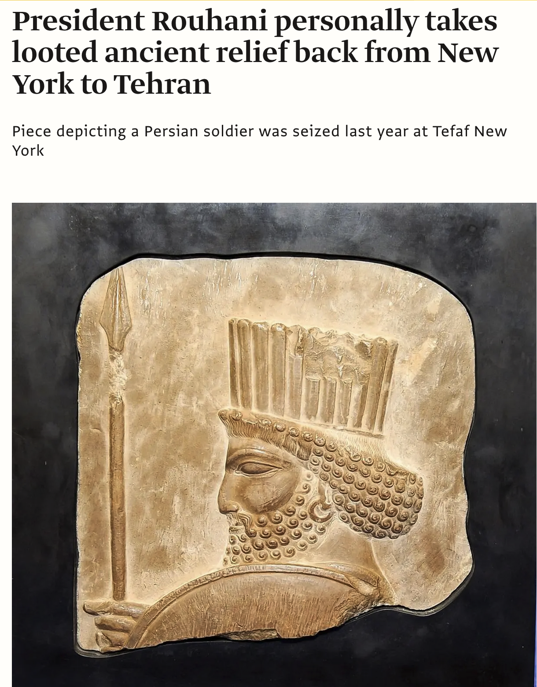
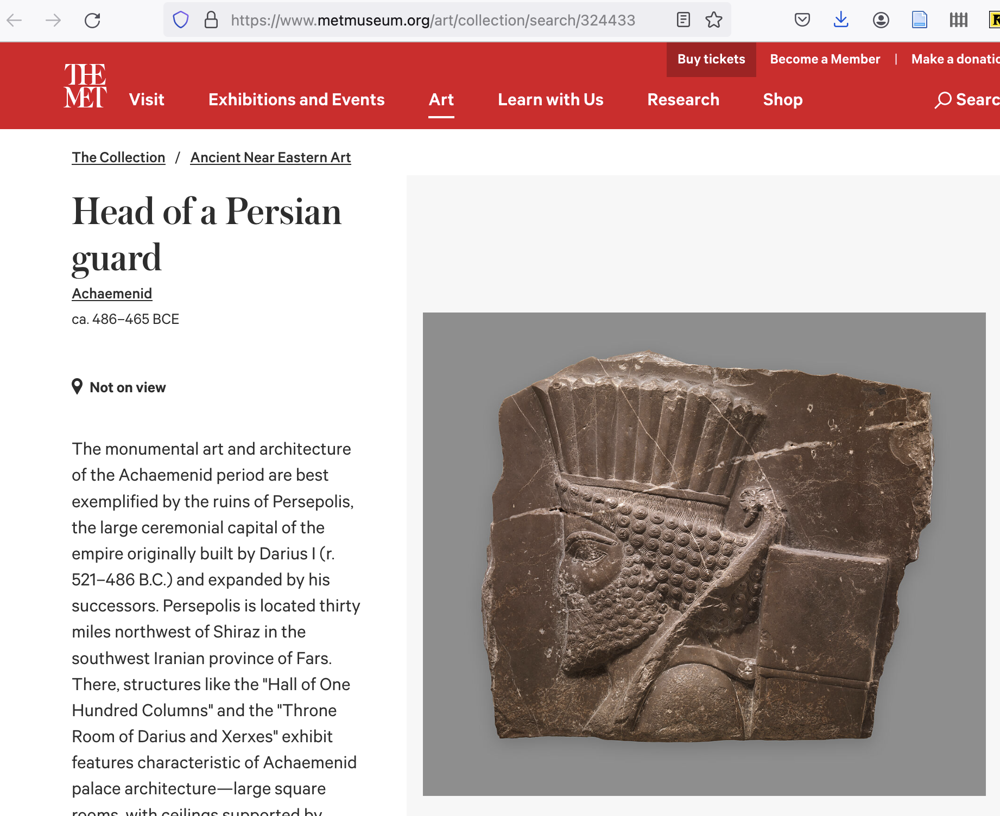
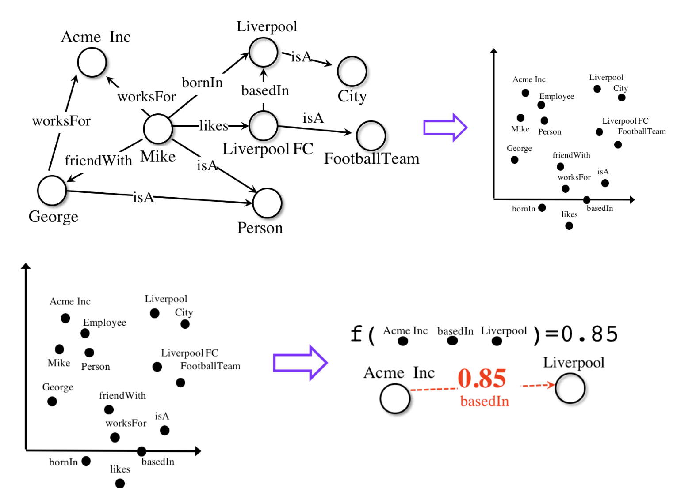
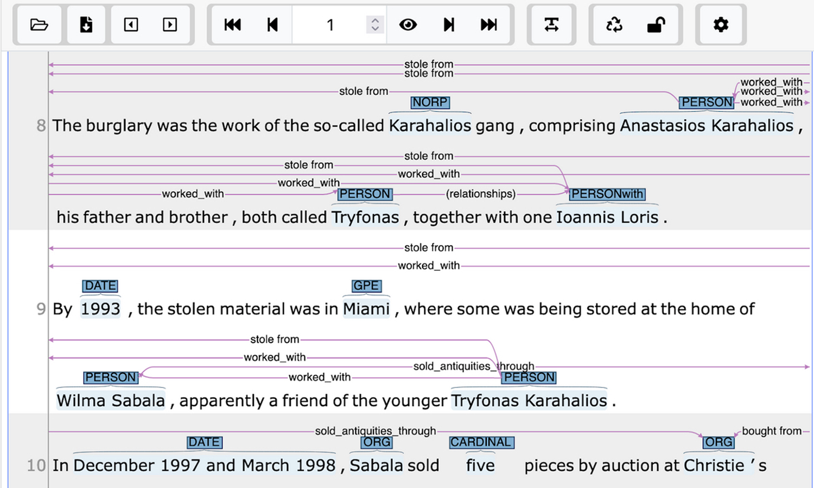
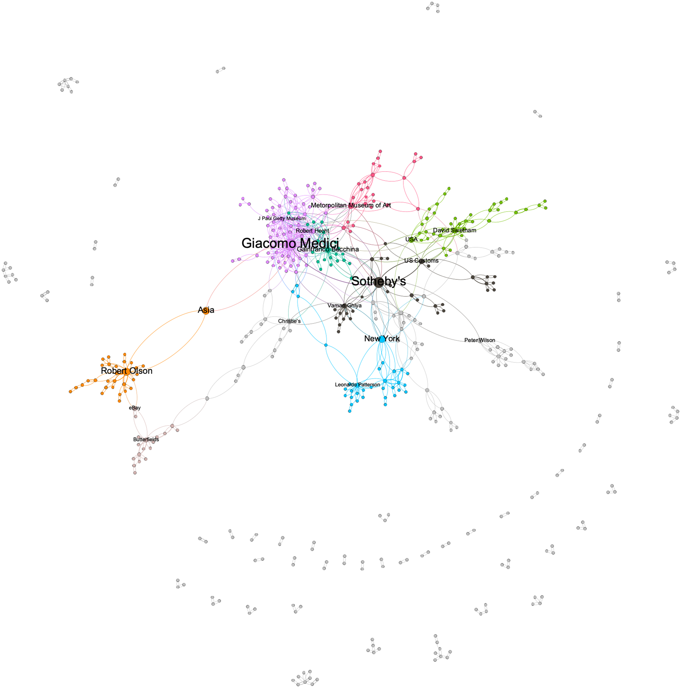
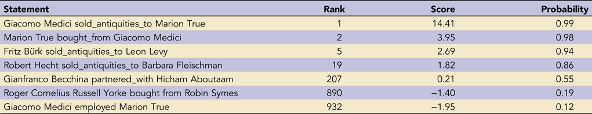
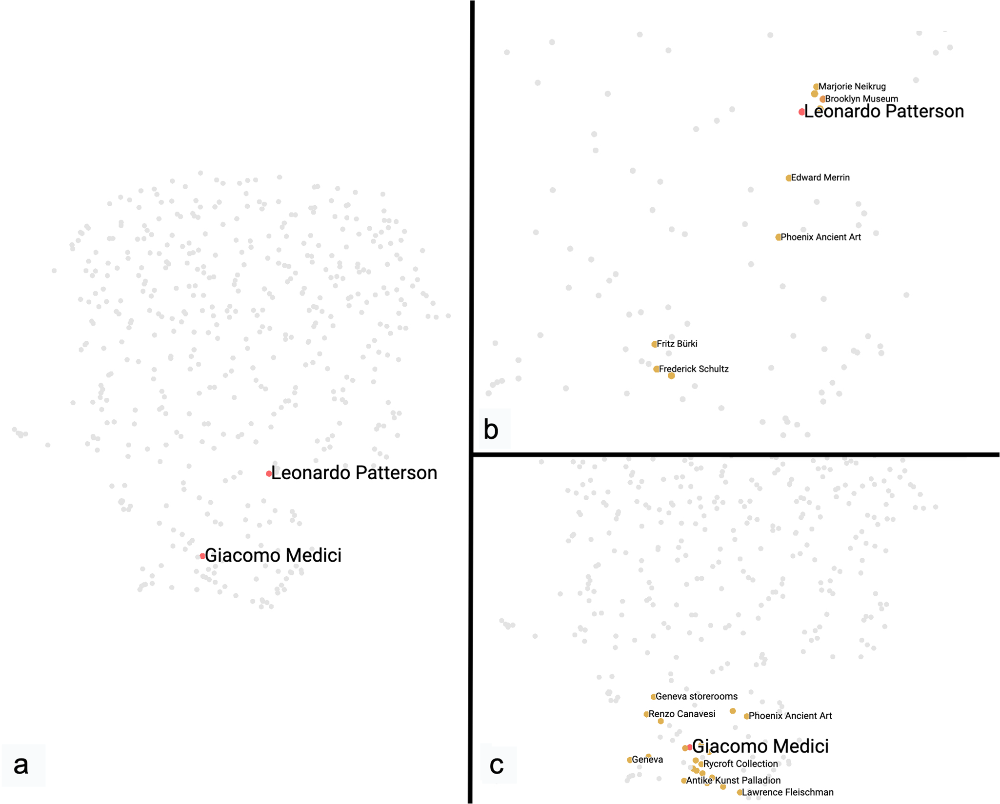
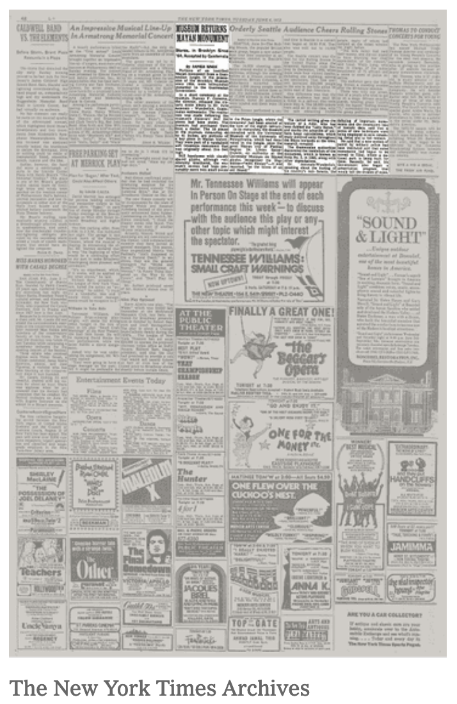
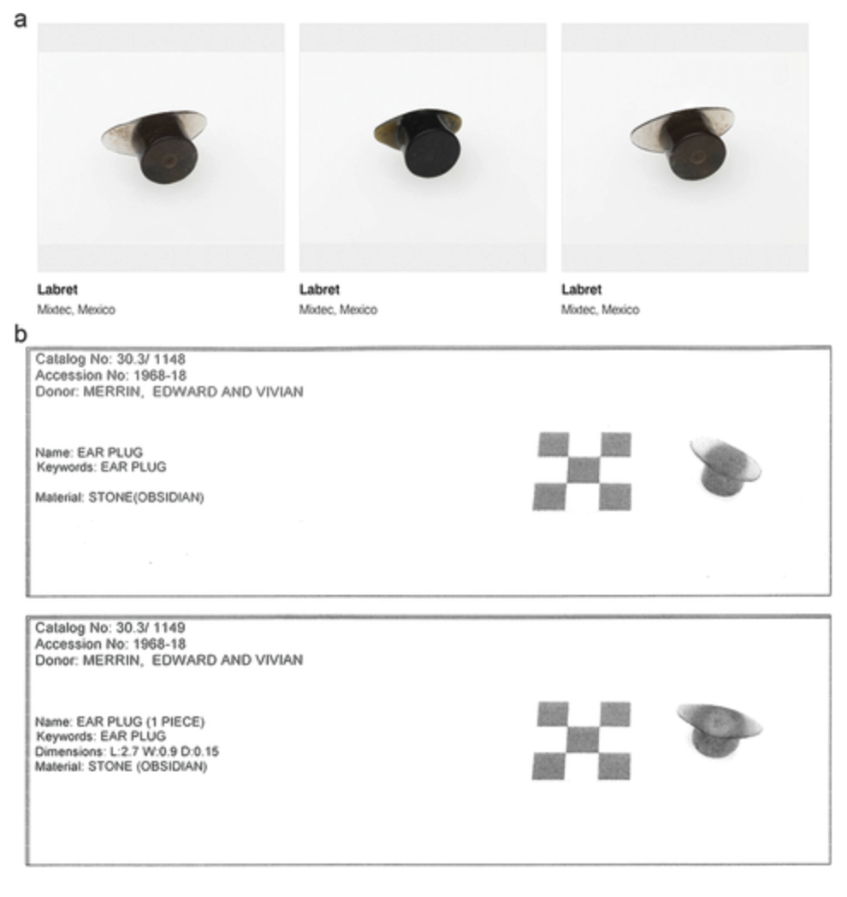
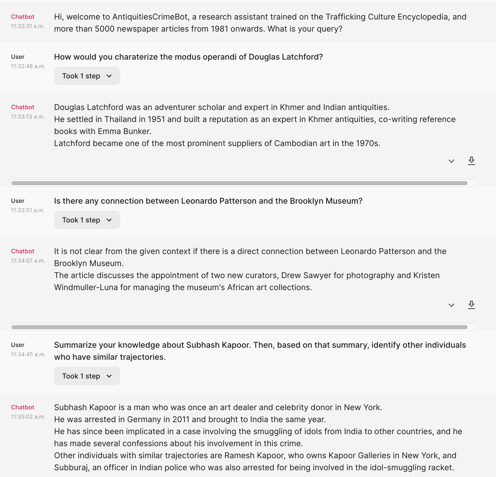

<!DOCTYPE html>
<html lang="en">
  <head>
    <meta charset="utf-8" />
    <meta name="viewport" content="width=device-width, initial-scale=1.0, maximum-scale=1.0, user-scalable=no" />

    <title></title>
    <link rel="stylesheet" href="dist/reveal.css" />
    <link rel="stylesheet" href="dist/theme/night.css" id="theme" />
    <link rel="stylesheet" href="plugin/highlight/zenburn.css" />
	<link rel="stylesheet" href="css/layout.css" />
	<link rel="stylesheet" href="plugin/customcontrols/style.css">


    <script defer src="dist/fontawesome/all.min.js"></script>

	<script type="text/javascript">
		var forgetPop = true;
		function onPopState(event) {
			if(forgetPop){
				forgetPop = false;
			} else {
				parent.postMessage(event.target.location.href, "app://obsidian.md");
			}
        }
		window.onpopstate = onPopState;
		window.onmessage = event => {
			if(event.data == "reload"){
				window.document.location.reload();
			}
			forgetPop = true;
		}

		function fitElements(){
			const itemsToFit = document.getElementsByClassName('fitText');
			for (const item in itemsToFit) {
				if (Object.hasOwnProperty.call(itemsToFit, item)) {
					var element = itemsToFit[item];
					fitElement(element,1, 1000);
					element.classList.remove('fitText');
				}
			}
		}

		function fitElement(element, start, end){

			let size = (end + start) / 2;
			element.style.fontSize = `${size}px`;

			if(Math.abs(start - end) < 1){
				while(element.scrollHeight > element.offsetHeight){
					size--;
					element.style.fontSize = `${size}px`;
				}
				return;
			}

			if(element.scrollHeight > element.offsetHeight){
				fitElement(element, start, size);
			} else {
				fitElement(element, size, end);
			}		
		}


		document.onreadystatechange = () => {
			fitElements();
			if (document.readyState === 'complete') {
				if (window.location.href.indexOf("?export") != -1){
					parent.postMessage(event.target.location.href, "app://obsidian.md");
				}
				if (window.location.href.indexOf("print-pdf") != -1){
					let stateCheck = setInterval(() => {
						clearInterval(stateCheck);
						window.print();
					}, 250);
				}
			}
	};


        </script>
  </head>
  <body>
    <div class="reveal">
      <div class="slides"><section  data-markdown><script type="text/template"><!-- .slide: class="drop" data-background-opacity="0.75" data-background-size="contain" data-background-image="cdhi-presentation/sander-sammy-HoOP0nxd8eg-unsplash.jpg" -->
<div class="" style="position: absolute; left: 0px; top: 0px; height: 700px; width: 960px; min-height: 700px; display: flex; flex-direction: column; align-items: center; justify-content: center" absolute="true">

<div align="right">
<br><Br><Br><Br><Br><Br>

##### Cultural Heritage Crime <br> & Neural Networks:
##### Deformation for Hot Tips

<small><small>Shawn Graham, scholar.social@electricarchaeo, Carleton U</small></small>

</div>
</div>

<aside class="notes"><p>45 minutes target. apologies for the title; it doesn&#39;t quite capture what I&#39;m after but let&#39;s just leave it for now.</p>
<p>acknowledgement. For acknowledgements to be meaningful, we need to think about the way that what we study, or what we study, or the things we explore, intersects with that acknowledgement? For me as a lapsed archaeologist who became &#39;DH&#39; partly out of the desperation of unemployment and one last kick at the can, it means: trying to be open about the work, share the code, think about the impacts, wonder about the human in digital humanities.</p>
<p>In this case, my interests in archaeology intersected with a fascination at the power of networks to represent information, to <em>compute</em> information, and to show us the gaps in things we thought we already knew. Archaeology - especially given its emergence as a tool of empire and colonization - is only starting to gain the humility to admit that we do not know things, that there might be other powerful ways of knowing. A land acknowledgement challenges us to look around us with new eyes.</p>
<p>The goal today is to introduce you to knowledge graph embeddings and how we&#39;ve been using them to deform and see our topic with fresh eyes. The domain we&#39;re exploring is cultural heritage crime. And so let us begin.</p>
</aside></script></section><section  data-markdown><script type="text/template"><!-- .slide: class="drop" data-background-opacity="0.75" data-background-size="contain" data-background-image="cdhi-presentation/ivan-bandura-XGE8v6x0mLM-unsplash.jpg" -->
<div class="" style="position: absolute; left: 0px; top: 0px; height: 700px; width: 960px; min-height: 700px; display: flex; flex-direction: column; align-items: center; justify-content: center" absolute="true">


</div>

<aside class="notes"><p>The Problem(s) of Cultural Heritage Crime archaeologists read the landscape, looking for little hints of what lies beneath. But tombaroli are better - they know far better because they walk that land everyday. But they don&#39;t get much for their trouble; if something they dig out of the ground might fetch them ten dollars from the middleman, that middleman might then sell it to somebody higher up the food chain for a lot more money.</p>
<p>And by the time collectors in Europe or North America or Asia end up purchasing the antiquities they have increased in value thousandfold, hundred thousandfold.</p>
<p>What I&#39;m interested in are those chains and I want to know how they connect and I want to know is it possible if you took these chains could you somehow extrapolate from the things you do know to the things you don&#39;t know.</p>
</aside></script></section><section  data-markdown><script type="text/template"><!-- .slide: class="drop" data-background-opacity="0.75" data-background-size="contain" data-background-image="cdhi-presentation/melfi-castle-by-mary-tizi.png" -->
<div class="" style="position: absolute; left: 0px; top: 0px; height: 700px; width: 960px; min-height: 700px; display: flex; flex-direction: column; align-items: center; justify-content: center" absolute="true">


</div>

<aside class="notes"><p>In 1994, a museum in Italy was robbed; months later the stolen vases turned up in the home of a dealer in Germany. A police search of the property found artefacts in the process of being made ready for sale - and documents indicating the sale of the vases. This gave them the names of two men in Italy, whom they put under surveillance. The one - Pasquale Camara - was a former policeman himself. The Carabinieri followed him and one day Camara set out to visit a known antiquities dealer. On the way he crashed his car and was killed. In the wreckage were antiquities, which gave the police license to search Camara&#39;s apartment in Rome. And there they found hundreds of artifacts, some real, some fake, photographs of artifacts at every stage in the process from being pulled out of the ground to being readied for sale at auction. And one of the things that was found were <em>more documents</em> with the names of other people in the chain of connections, including a man named Danilo Zicchi. When they searched <em>his</em> department, they found a <strong>diagram</strong> drawn by Camara showing the organization of the Italian trade to the best of his knowledge.</p>
</aside></script></section><section  data-markdown><script type="text/template"><!-- .slide: class="drop" -->
<div class="" style="position: absolute; left: 0px; top: 0px; height: 700px; width: 960px; min-height: 700px; display: flex; flex-direction: column; align-items: center; justify-content: center" absolute="true">

<split even>


</split>
</div>

<aside class="notes"><p>this blew the investigation wide open and led to more investigations and arrests. </p>
<p>And I wanted to know: if we took these connections as a starting point, would there be anyway of uncovering the connections we don&#39;t know about? We set out to answer this question, and called it the New Organigram Project. If we mapped out the connections we did know, was there any way to fill in the gaps? And the short answer is yes. But it also means we have to forget what we know, and deform the things we do.</p>
<p>This is a sshrc funded insight development grant with my research partner Donna Yates at the University of Maastricht.</p>
</aside></script></section><section  data-markdown><script type="text/template"><!-- .slide: class="drop" -->
<div class="" style="position: absolute; left: 0px; top: 0px; height: 700px; width: 960px; min-height: 700px; display: flex; flex-direction: column; align-items: center; justify-content: center" absolute="true">

<split even>





</split>

<small>See [Donna Yate's 2018 Shannon Lecture 2018 for more on how one of the Persepolis Reliefs came to be in a Canadian Museum](https://www.youtube.com/watch?v=A_LFGoBPW-g)</small>
</div>

<aside class="notes"><p>let&#39;s talk provenance research for a moment.
two approaches, generally: reactive, object oriented, those things most likely to cause trouble (note persepolis relief at ROM was most likely stolen from Persepolis in the 1930s, see Donna&#39;s Shannon Lecture talk at Carleton in 2018 for more on that). We know paintings with murky provenances in the 1930s and 40s are going to be trouble. We know that artefacts that passed through the hands of certain dealers are going to be trouble.</p>
<p>The other way is to think of objects as parts of a diaspora, and draw connections between them across and between institutions. But this is hampered by the difficulties of data sharing across silos, institutions, and a perception that this work takes away energy from the more pressing provenance problems.</p>
</aside></script></section><section  data-markdown><script type="text/template"><!-- .slide: class="drop" data-background-opacity="0.75" data-background-size="contain" data-background-image="cdhi-presentation/azka-rayhansyah-xg-oOh1OX2k-unsplash.jpg" -->
<div class="" style="position: absolute; left: 0px; top: 0px; height: 700px; width: 960px; min-height: 700px; display: flex; flex-direction: column; align-items: center; justify-content: center" absolute="true">


</div>

<aside class="notes"><p>The problem of investigating cultural heritage crime is that we tend to see through a shattered mirror poorly: we see the things we set out to see.</p>
<p>the museum have priorities for particular objects but those priorities are based on what we already know and what we already expect to see.</p>
<p>That is to say, if we focus on the familiar problems and the familiar kinds of crimes, then we&#39;re going to find the same familiar relationships and the same familiar object pathways. So what we wanted to do was to think beyond that. </p>
<p>There are other kinds of crimes that we might encounter. You know, how museums and objects and collections might have key roles in fraud schemes or tax evasion or money laundering. We know these things happen. We know that antiquities are a major part of that, but focusing on the object biography approach sometimes might only show us the things that we already expected to find. </p>
<p>So how do you change that? How do you change that vision?</p>
</aside></script></section><section  data-markdown><script type="text/template"><!-- .slide: class="drop" -->
<div class="" style="position: absolute; left: 0px; top: 0px; height: 700px; width: 960px; min-height: 700px; display: flex; flex-direction: column; align-items: center; justify-content: center" absolute="true">


</div>

<aside class="notes"><p>dh: deformation, drawing on things like Samuels and McGann and, you know, reading poetry backwards against the grain or Mark Sample&#39;s deformed digital humanities where you kind of break things and in the way that things break you see different possibilities. </p>
<p>Well, we&#39;re not necessarily trying to break anything, but what we are trying to do is to take the things that we know, deform it, and somehow see it with fresh eyes again in a way that we haven&#39;t done before.</p>
<p>see Yates, Graham , Laundering and Museum Collections, Patterns, Priorities, Provenance and Hidden Crime. International Journal of Heritage Studies called Reputation for gritty details</p>
</aside></script></section><section  data-markdown><script type="text/template"><!-- .slide: class="drop" -->
<div class="" style="position: absolute; left: 0px; top: 0px; height: 700px; width: 960px; min-height: 700px; display: flex; flex-direction: column; align-items: center; justify-content: center" absolute="true">

Word Embeddings to Knowledge Graphs to Knowledge Graph Embeddings Models

<small>Ben Schmidt has a nice presentation about word embeddings [here](http://benschmidt.org/UNC-Vectors.html)</small>
</div>

<aside class="notes"><p>There are a number of pieces that I think I ought to explain at this point. Ultimately, they&#39;re all just more and more sophisticated or complicated expressions of the idea that if we have a document in front of us, and we count up all the words and how many times they turn up, and we pay attention to the context of their use - more counting! - we can see patterns that are meaningful. It&#39;s amazing how much of DH boils down to sophisticated counting. Let&#39;s start with word embeddings.</p>
</aside></script></section><section  data-markdown><script type="text/template"><!-- .slide: class="drop" -->
<div class="" style="position: absolute; left: 0px; top: 0px; height: 700px; width: 960px; min-height: 700px; display: flex; flex-direction: column; align-items: center; justify-content: center" absolute="true">


\[latitude, longitude] = a 2 word embedding model describing space
</div>

<aside class="notes"><p>&#39;word embeddings&#39; captures the idea that a word can actually be thought of as a location or a direction in semantic space. </p>
<p>As an example think of latitude and longitude. latitude and longitude are a two-dimensional vector there are two numbers that describe a point in space and if I know the the vector for Ottawa - the latitude and longitude - and I know the vector for Toronto - the latitude and longitude - I can measure mathematically the distance between those two points in geographic space and know something about the relationship between Ottawa and Toronto I could add more information - maybe altitude - and then that would give me a three-dimensional vector.</p>
</aside></script></section><section  data-markdown><script type="text/template"><!-- .slide: class="drop" -->
<div class="" style="position: absolute; left: 0px; top: 0px; height: 700px; width: 960px; min-height: 700px; display: flex; flex-direction: column; align-items: center; justify-content: center" absolute="true">


<small> from Sergey Smetanin, 'Google News and Leo Tolstoy: Visualizing Word2Vec Word Embeddings using t-SNE' [Towards Data Science](https://towardsdatascience.com/google-news-and-leo-tolstoy-visualizing-word2vec-word-embeddings-with-t-sne-11558d8bd4d)</small>
</div>

<aside class="notes"><p>so word embeddings map patterns of word use in a corpus into a kind of &#39;space&#39;, at which point we can do things using vector math, geometry, trigonometry, whatever to measure proximity in space.  <em>How</em> they do that? You have to represent the words as a vector first - you could have a vector the same length as the vocabulary of all your documents, and then 1s and 0s to represent when a word is present and when it is not. But there are more efficient ways of doing this and it turns out neural network architectures are good for that, tokenizing, counting word cooccurences, cooking up a matrix, and then representing the relationships between words through the similarity of their vectors. </p>
<p>And once you&#39;ve done that, you can do semantic analogies reasoning king minus woman equals queen, right? queen plus man equals king? Word embeddings reveal our biases. Ben Schmidt used word vectors to pull apart the way student evaluations of professors draw on heavily gendered discourses so that in equivalent semantic settings men were always called geniuses and women were always...not.</p>
</aside></script></section><section  data-markdown><script type="text/template"><!-- .slide: class="drop" -->
<div class="" style="position: absolute; left: 0px; top: 0px; height: 700px; width: 960px; min-height: 700px; display: flex; flex-direction: column; align-items: center; justify-content: center" absolute="true">

<h3> Fun with embeddings </h3>

<small> from W. Hamilton, J. Leskovec, D. Jurafshy [Diachronic Word Embeddings Reveal Statistical Laws of Semantic Change](https://aclanthology.org/P16-1141.pdf)</small>
</div>
<aside class="notes"><p> Embeddings are amazing. Here, they find change in meaning over time. Saw this in Ben Schmidt's presentation, originally. </p></aside></script></section>

<section  data-markdown><script type="text/template"><!-- .slide: class="drop" -->
<div class="" style="position: absolute; left: 0px; top: 0px; height: 700px; width: 960px; min-height: 700px; display: flex; flex-direction: column; align-items: center; justify-content: center" absolute="true">


<small>When a 'good - bad' vector intersects a 'forsale - notforsale' vector </small>
</div>
<aside class="notes"><p> In a different project, used word embeddings to see how people talked about human remains they were buying and selling.. </p></aside></script></section>


<section  data-markdown><script type="text/template"><!-- .slide: class="drop" -->
<div class="" style="position: absolute; left: 0px; top: 0px; height: 700px; width: 960px; min-height: 700px; display: flex; flex-direction: column; align-items: center; justify-content: center" absolute="true">

What if you represented a knowledge graph with an embedding model?




[Ampligraph](https://docs.ampligraph.org/en/latest/)
</div>

<aside class="notes"><p>The primary idea behind these embeddings is to capture the semantics of the KG in a way that distances or angles between vectors correspond to semantic similarity or relational patterns. Ampligraph uses a variety of different models. We&#39;ve found that the ComplEx model works best for us. Each entity and each relationship gets assigned a complex number; then when it looks at the graph, statements that are true (present in the graph) get a higher score than statements that it generates from the entities and relationships that are false (here, &#39;Mike isA FootballTeam&#39; would get a low score). It iterates over and over so that the true statements get higher scores and the false statements get lower scores.  </p>
<p>But first you need those true statements.</p>
</aside></script></section><section  data-markdown><script type="text/template"><!-- .slide: class="drop" -->
<div class="" style="position: absolute; left: 0px; top: 0px; height: 700px; width: 960px; min-height: 700px; display: flex; flex-direction: column; align-items: center; justify-content: center" absolute="true">




see [our methods paper](https://doi.org/10.1017/aap.2023.1)
</div>

<aside class="notes"><p>used InCEPTION platform to do the annotation.</p>
<p>We set out to build a knowledge graph of the things we already knew; the graph is composed of triplets of subjects WhoDoanActionOn objects: GiacomoMedici SoldTo RobertHecht</p>
<p>The knowledge graph contained 1,204 statements about 478 entities using 81 unique verbs (relationships/predicates) derived from the 129 encyclopedia articles that describe the illicit and illegal antiquities trade.</p>
</aside></script></section><section  data-markdown><script type="text/template"><!-- .slide: class="drop" -->
<div class="" style="position: absolute; left: 0px; top: 0px; height: 700px; width: 960px; min-height: 700px; display: flex; flex-direction: column; align-items: center; justify-content: center" absolute="true">

The knowledge graph


</div>

<aside class="notes"><p>These are the shards of the antiquities trade that have surfaced. We use Ampligraph to project <em>the triplets</em> into an embedding space, just as one would create an embedding model of the words in a corpus of texts to understand if words cluster by gender, we can now do that same kind of semantic algebra on these statements of knowledge.</p>
<p>as a social network, this is a multimode network and you&#39;d have to transform it into a series of one-mode networks, one for each relationship type, to do conventional network analysis. </p>
<p>But looking at this we can see at a glance that a lot of what we know from Trafficking Culture ties into those cordata from Camara&#39;s original diagram. There&#39;s a lot of unknown unknowns here.</p>
<p>We drop this graph through ampligraph&#39;s neural architectures to create the embedding model.</p>
</aside></script></section><section  data-markdown><script type="text/template"><!-- .slide: class="drop" -->
<div class="" style="position: absolute; left: 0px; top: 0px; height: 700px; width: 960px; min-height: 700px; display: flex; flex-direction: column; align-items: center; justify-content: center" absolute="true">

We can test the model with things we already know but didn't specifically encode


</div>

<aside class="notes"><p>if you know that Giacomo Medici sold to Robert Hecht you can do a kind of translation in a geometric sense you&#39;ll find other people who sold to Robert Hecht turning up in the same vague space. </p>
<p>To evaluate these new statements, Ampligraph evaluates their likelihood by way of ranking them against corrupted sets. Corrupted sets are true statements in which the subject or object gets swapped out. Statements that fall closely in the embedding space to the corrupted statements therefore rank lower. Expert evaluation is still required. </p>
<p>By measuring where these new statements fall in the multi-dimensional space of the model compared to the known &#39;true&#39; statements we initially fed it, the model can return likely true statements for a given probability. We don&#39;t treat the results as <em>actually</em> being true until we can confirm them and some of the statements are so obviously true that they&#39;re of no use to us. Some statements are so unlikely that anyone with knowledge of this domain can discard them but what is left are the interesting possible relationships that we did not previously have reason to suspect but cannot immediately rule out. We look at those statements and use our expert judgment to decide which ones to investigate further&quot;...  and that&#39;s where the hot tips come from!</p>
</aside></script></section><section  data-markdown><script type="text/template"><!-- .slide: class="drop" -->
<div class="" style="position: absolute; left: 0px; top: 0px; height: 700px; width: 960px; min-height: 700px; display: flex; flex-direction: column; align-items: center; justify-content: center" absolute="true">

## Our _first_ Hot Tip:

<split even >


</split>
Leondardo Patterson & the Brooklyn Museum 

<small> Patterson photo via [Alchetron](https://alchetron.com/Leonardo-Patterson#leonardo-patterson-20d0d589-7d28-41af-97fa-e328d4da6b2-resize-750.jpg), Museum photo by 'PaladinHero1', [wikimedia](https://commons.wikimedia.org/wiki/File:BrooklynMuseumJanuary2007.jpg) </small>
</div>

<aside class="notes"><p>While everyone loves numbers, sometimes valuable insight emerges from visualization. In the network visualization, blank spaces or clustered nodes don&#39;t really carry any semantic meaning: it&#39;s just the force-gravity algorithm at work. But we can visualize the embedding model, and now proximity or blank space is <em>meaningful.</em></p>
<p>That is to say, if there was someone in South America who similarly bought and sold antiquities to a person who then sold antiquities at auction in California, the similarity of the <em>pattern</em> of our knowledge would project these folks into a similar kind of space.</p>
<p>I want to take a moment and walk you through just <strong>one</strong> of the insights that this provided us, and what it enabled us to discover</p>
</aside></script></section><section  data-markdown><script type="text/template"><!-- .slide: class="drop" -->
<div class="" style="position: absolute; left: 0px; top: 0px; height: 700px; width: 960px; min-height: 700px; display: flex; flex-direction: column; align-items: center; justify-content: center" absolute="true">


</div>

<aside class="notes"><p>When we translate that graph into an embedding model, you can use other techniques like umap to reduce the dimensionality down to two dimensions. <strong>and now space in this visualization implies something semantic</strong>! If entities are close together, there&#39;s some kind of similarity between them!</p>
<p>As a check, we first looked at things we really knew well, to see how they turn up in this space - eg Giacomo Medici and his circle. These make sense to us. We took the cosine distances between Giacomo Medici and his collaborators as a kind of baseline - were there entities in this graph that had closer?</p>
<p>And there was: Leonardo Patterson &amp; the Brooklyn Museum</p>
</aside></script></section><section  data-markdown><script type="text/template"><!-- .slide: class="drop" -->
<div class="" style="position: absolute; left: 0px; top: 0px; height: 700px; width: 960px; min-height: 700px; display: flex; flex-direction: column; align-items: center; justify-content: center" absolute="true">

## Leonardo Patterson


<small>Photo from Alchetron again</small>
</div>

<aside class="notes"><p>Patterson has made a career of selling real antiquities from Central and South America and selling audacious fakes. He&#39;s been convicted in several countries, he&#39;s had criminal charges in other countries, he&#39;s had civil judgments in more countries. But despite all that, he sheds it all off like water off a duck&#39;s back. And sometimes he often seemed to have more money than he should coupled with, you know, periods of financial distress. And to Donna&#39;s eye, she said, &quot;You know, this fellow is the type of person who might be involved in different kinds of crime beyond merely selling antiquities.&quot; </p>
<p>So this is a really interesting hot tip. And in fact, this hot tip has completely replaced our research agenda. We have spent the last several months investigating Leonardo Patterson and that was just the first hit that the model gave us. We still have all the others to look at.</p>
</aside></script></section><section  data-markdown><script type="text/template"><!-- .slide: class="drop" -->
<div class="" style="position: absolute; left: 0px; top: 0px; height: 700px; width: 960px; min-height: 700px; display: flex; flex-direction: column; align-items: center; justify-content: center" absolute="true">

<split even>




</split>

<small> New York Times, June 6, 1972 - Museum Returns Artefacts</small>
</div>

<aside class="notes"><p>the Brooklyn Museum, alright, well it&#39;s in New York and Patterson operated out of New York from time to time, so that seems plausible that there could be a connection. The Brooklyn Museum has had antiquities in it that have had dodgy origins. In the 64 they purchased and then had to return in 72, looted in traffic portions of a Maya Stela from Guatemala from the site of Piedras Negras. And, you know, that seems to be the milieu that Patterson would be operating in. </p>
<p>So four minutes later, four minutes of searching the Brooklyn Museum&#39;s collections database, we had a hit. We found that Patterson donated low-value Mexican-style objects in the in the late 60s. So we asked the museum about it and the people who got back to us said, &quot;Well, you know what? We&#39;ve just recently flagged those objects as worthy of more scrutiny because of that Patterson connection and one of the pieces had appeared in a special exhibit.&quot; They said that investigating those pieces was a low priority, but now that they&#39;ve received our email they were going to look into it a bit more. </p>
<p>We could have left things there: our hot tip made us spot something no one had noticed, and our email asking about it triggered deeper investigation at the institution.</p>
</aside></script></section><section  data-markdown><script type="text/template"><!-- .slide: class="drop" -->
<div class="" style="position: absolute; left: 0px; top: 0px; height: 700px; width: 960px; min-height: 700px; display: flex; flex-direction: column; align-items: center; justify-content: center" absolute="true">

## The Basic Tax Scheme

<div align="left">
<small>
<li> Collector purchases an artefact for x amount
<li> Collector has the artifact valued for more than x amount
<li> Collector donates the artifact to a museum
<li> Collector receives a tax break for charitable donation in the amount of the valuation of the artefact, not how much they paid for it.
<small></div>
<div align=right></img>
</div>
<small> One of the objects in question. 
see 

[Donna Yates 2014](http://www.anonymousswisscollector.com/2014/03/loop-holes-how-antiquites-dealers-and-museums-profit-from-charitable-donations.html) 

</small>
</div>

<aside class="notes"><p>But wait, there&#39;s more. It gets better. The only other time that we know of that Patterson donated material was as part of a tax scam in &#39;79 in Australia. He arranged a donation to the National Gallery of Victoria that took advantage of a big loophole. He imported a whole bunch of antiquities into Australia, he sold them to a group of investors for about one million dollars and they turned around and donated the pieces after having gotten them valued at four million dollars via a supplier that Patterson provided. And then they donated for the inflated tax relief. This did not break the law but it certainly did not meet the law&#39;s intent. And you know this undermines public trust in public museums and this caused a bit of a scandal and all that Australia could do at the time was to close the loophole. </p>
<p>So why is he donating these these low value little things to the Brooklyn museum when the only other time we&#39;ve encountered him donating has been to pull off a big scam like what he achieved in Australia? So we started looking into that and we started finding Patterson donations in other museums. And this became easy once we knew what we should be looking for. But until we were prompted by the model we had no reason to ever look.</p>
</aside></script></section><section  data-markdown><script type="text/template"><!-- .slide: class="drop" data-background-opacity="0.75" data-background-size="contain" data-background-image="cdhi-presentation/bernard-hermant-qTpc0Vj4YoE-unsplash.jpg" -->
<div class="" style="position: absolute; left: 0px; top: 0px; height: 700px; width: 960px; min-height: 700px; display: flex; flex-direction: column; align-items: center; justify-content: center" absolute="true">

<div align="right">
<br><Br><Br><Br><Br><Br><Br><Br>
<h3>Reputation Laundering</h3>

<i>or, the value of a thank you note</i>
</div>
</div>

<aside class="notes"><p>We&#39;ve now found Patterson donations in six museums in three countries over three decades. It&#39;s really odd. What&#39;s going on with all these donations? Well some human teeth turn up the answer. Turns out that in 84 Patterson made a donation of human teeth from Chiapas that had jade and plaster inlaid in them. Gave those to the British Museum. The British Museum doesn&#39;t have much documentation related to it but what they do have was a report to the museum trustees in 84 and a just a pro-forma letter of thanks sent by the museum to Patterson to acknowledge the donation. </p>
<p>But the letter never made it to its destination. It got returned to the museum saying nobody at this address and employees of the museum wrote notes on it saying what are the odds that a person who doesn&#39;t have a credible address is a credible donor. Well it turns out that at that time 1984 the same month that that donation was made to the museum he was arrested in the US on wire fraud charges for trying to pull off the sale of fake ancient Maya murals. So he wasn&#39;t in his regular address because he was currently part of the American penal system. We think that the whole point of giving the teeth to the museum, British Museum, was to get that letter to support the fraudulent sale of the murals, making the BM &#39;one element in a transnational scheme to defraud in the US.&#39;</p>
<p>If he had not been arrested and missed his mail he would have had a letter from the British Museum as a tangible token of his legitimacy to potential buyers. Right? So if a famous museum like that sends a letter to you saying thank you so much for your donation then when you&#39;re trying to sell or scam somebody else it really helps to have that letter. We think that Patterson would have gotten similar acknowledgments or receipts of his gifts to other museums and you know these gifts often are formally acknowledged in annual reports from different museums. So this one tip from our model seems to have uncovered one of the ways that Patterson launders his reputation, creates his legend, creates his bona fides, makes a name for himself as an antiquities dealer so that he can make the big scores later on.</p>
</aside></script></section><section  data-markdown><script type="text/template"><!-- .slide: class="drop" data-background-opacity="0.75" data-background-size="contain" data-background-image="cdhi-presentation/kg-search.png" -->
<div class="" style="position: absolute; left: 0px; top: 0px; height: 700px; width: 960px; min-height: 700px; display: flex; flex-direction: column; align-items: center; justify-content: center" absolute="true">

## Large Language Models Have Entered The Chat
</div>

<aside class="notes"><ul>
<li>there&#39;s a lot of more known knowns that we could add to our embedding model</li>
<li>but manually annotating documents is a poor use of human resources</li>
<li>maybe LLMs could be useful here?</li>
<li>We re-ran our study using a knowledge graph where we fed each original trafficking culture article to gpt3.5. Summarization is one thing LLMs are good at because they are ultimately models of word use; their architecture goes back to uses of neural networks to facilitate translation from one language to another. What we ask the model to do then is a combination of both summarization and translation to the key ideas in the source document</li>
<li>llms are lossy compressed versions of the whole internet, what andrej Karpathy calls a 'gestalt of the text' which is really great at next-word prediction (pre-training stage)
<li>then they get fine-tuned on human paired instruction datasets - maybe 100 000 pairs. So now if you pick a word or sentence at random, the generated next-obvious-word makes a lot more sense
<li>then you compare pairs of results for the same prompt, and pick the better result - this is reinforcement learning from human feedback
<li>and in this way you end up with a model of language that you can drop trafficking antiquity articles through and end up with it correctly pulling out subject,predicate,object triplets
<li> Other natural language processing techniques like relationship extraction depends on trained language models where you have thousands of labelled examples of what you want. Any of the available models we tried missed things like artefacts and proper names and co-reference resolution (things like which 'he' is being referred to?) - the LLM was better at the task with less fuss and muss.
</ul>
</aside></script></section><section  data-markdown><script type="text/template"><!-- .slide: class="drop" -->
<div class="" style="position: absolute; left: 0px; top: 0px; height: 700px; width: 960px; min-height: 700px; display: flex; flex-direction: column; align-items: center; justify-content: center" absolute="true">

```text
You are given unstructured text about the antiquities trade. 
Extrapolate as many relationships as you can from the prompt 
concerning individuals, organizations, places, and objects. 
Every node has a name, label. Every edge has a to and from with 
node names, and a label. Edges are directed, so the order of 
the from and to is important. Format as json.

Example: Mary Turlington made a ceramic Ducky in Big Pond in 2023; 
she had Kenny Wong paint it. It was bought by the 
Grand Narrows Museum in 2023 for $123456.
        [{
               "nodes": [{
                           "label": "the Ducky",
                           "type": "Object",
                           "madeIn": "Big Pond",
                           "date": "2023",
                           "potter": "Mary Turlington",
                           "painter": "Kenny Wong",
                           "price": "$123456"
               }],
               "edges": [{
                           "startNode": "the Ducky",
                           "endNode": "Grand Narrows Museum",
                           "type": "bought by",
                           "date": "2024"
               }]
        }]
```

<small>Graham S, Yates D and El-Roby A. Investigating antiquities trafficking with generative pre-trained transformer (GPT)-3 enabled knowledge graphs: A case study. Open Res Europe 2023, **3**:100 ([https://doi.org/10.12688/openreseurope.16003.1](https://doi.org/10.12688/openreseurope.16003.1)) </small>
</div>

<aside class="notes"><p>In our first exploration, annotating the articles and transforming the results into a csv table thence embedding model took us about three months to accomplish. With GPT-3, once we devised the prompt, the entire process took about three hours. The total cost was on the order of $50 (which included testing the prompt).
Made up statements were largely avoided because of the use of json, and when it did make something up, it was clearly from the Vinyl Cafe which enabled us to find easily.</p>
<p>You can qualify how well a knowledge graph embedding model works, and while the gpt derived model was not as high quality as the artisanal model, its results were very similar in terms of how it represented the space - the Leondardo/Brooklyn connection was still visible.</p>
</aside></script></section><section  data-markdown><script type="text/template"><!-- .slide: class="drop" -->
<div class="" style="position: absolute; left: 0px; top: 0px; height: 700px; width: 960px; min-height: 700px; display: flex; flex-direction: column; align-items: center; justify-content: center" absolute="true">

### Rerunning the model: Edward H. Merrin 




<small>top, three obsidian “labrets” in NGV via Patterson; bottom, two similar obsidian “ear plugs” in AMNH via Merrin</small>
</div>

<aside class="notes"><p>It suggested a <em>new</em> lead that seemed really unlikely, but again, the cosine distance was much closer than that for our Giacomo Medici baseline - dealer Edward Merrin and the AMNH.</p>
<p>This seemed unlikely. But we went to their online database and we found that lo and behold, he had in fact donated in &#39;68 and &#39;69, the same year that he was donating to the Brooklyn Museum, some small objects. </p>
<p>And you know what? The model also in both iterations of it also was suggesting a connection between Edward H. Merrin and the Brooklyn Museum. <strong>his data point is obscured by the patterson label in the plot</strong> And we already knew of a connection there. Marin didn&#39;t have the cleanest reputation. And when we go to the museum databases, well he also gave some low-value Latin American antiquities to the Brooklyn Museum. He did it in the same year as Patterson. </p>
<p>So it kind of feels like a pattern&#39;s emerging and we searched the AMNH collection for Marin&#39;s name and lo and behold he made donations to the museum too. The same years as Patterson, 1968 and 69. And the objects that Marin donated are similar in subject and quality to the ones that Patterson eventually donated to the National Gallery Victoria. Turns out Marin has also donated to the National Gallery of Australia. So there seems to be an awful lot of parallels suddenly happening between these two dealers. We don&#39;t have any evidence of a direct connection between the two but it&#39;s starting to feel circumstantially more likely. The plot thickens.</p>
</aside></script></section><section  data-markdown><script type="text/template"><!-- .slide: class="drop" data-background-opacity="0.75" data-background-size="contain" data-background-image="cdhi-presentation/sander-sammy-TuLHpIflZH0-unsplash.jpg" -->
<div class="" style="position: absolute; left: 0px; top: 0px; height: 700px; width: 960px; min-height: 700px; display: flex; flex-direction: column; align-items: center; justify-content: center" absolute="true">

<div align = 'right'>
<Br><br><Br><Br>

### Couldn't <Br> anyone <br> have made <br> these discoveries?
#### ...like, didn't we already _know_ this?

<small>
Yes, anyone might have made these discoveries<br>
But the point is, no one thought <b>to go look</b> until the machine gave us the tip<Br>
Deforming what we already knew prompted us to see the new connections 

<a href="https://matthewlincoln.net/2015/03/21/confabulation-in-the-humanities.html">Matthew Lincoln, Confabulation in the humanities</a>

</small>
</div>
</div>

<aside class="notes"><p>So to wind up, this is the point where somebody would typically say, &quot;well, wouldn&#39;t you have already found all that out if you hadn&#39;t had the model? Could you have come up with the same pattern of unexplained museum donations without all of this computational stuff?&quot; Well yes, of course you could, if you had known to look. But the point is, <em>no one ever did</em>. In over five decades since Patterson made the first donation that we&#39;ve found, and despite his infamy, no one has ever noticed this. The model deformed what we knew and prompted us to ask different questions to look at the material with fresh eyes. We&#39;re not saying that researchers could not have been noticed. </p>
<p>We&#39;re not saying that researchers could not have noticed these patterns, but we are saying that they probably would not have noticed. They haven&#39;t noticed over the last 50 years. </p>
<p>And have we learned anything actionable about Patterson&#39;s activities? Well, I&#39;m not a lawyer and you know this is all circumstantial evidence, so not in a legal sense. But we now have these reasons to suspect and a new lens to look at the information that we do have, or any new information that might come to light. But we weren&#39;t trying to find actionable data. We weren&#39;t trying to lay charges. We were trying to understand if there were things that could be seen from our evidence that we had never seen before. The method that we&#39;ve used could be used by other people. Every time I pull the lever, the makes new suggestions worth looking at. So our method helps us to to take off our blinders of the, you know, the things that we think we already know. It helps us see with fresh eyes. It deforms our knowledge. This is this is digital humanities folks.</p>
</aside></script></section><section  data-markdown><script type="text/template"><!-- .slide: class="drop" -->
<div class="" style="position: absolute; left: 0px; top: 0px; height: 700px; width: 960px; min-height: 700px; display: flex; flex-direction: column; align-items: center; justify-content: center" absolute="true">

## What's Next?

MOAR DATA obviously

Currently doing similar gpt-powered knowledge graph creation from museum provenance datasets
</div>

<aside class="notes"><p>problem here is that the information in these datasets might not be accurate or truthful.</p>
</aside></script></section><section  data-markdown><script type="text/template"><!-- .slide: class="drop" -->
<div class="" style="position: absolute; left: 0px; top: 0px; height: 700px; width: 960px; min-height: 700px; display: flex; flex-direction: column; align-items: center; justify-content: center" absolute="true">

RAG + KG Embedding Model


</div>

<aside class="notes"><p>I have 5000 newspaper articles, and the offshore leaks database. I am using gpt4 to iterate over the newspaper articles to turn into a knowledge graph that I add to the existing graph. I am developing code to match names from this expanded graph to those in the offshore leaks database, and then incorporate THAT knowledge.</p>
<p>I am then using &#39;Retrieve, Augment, Generate&#39; or RAG approaches to create a natural language interface with all of this information, constrained by the knowledge graph. 
- you take your documents and treat them as a datastore outside the LLM's training data. Drop *them* through an embedding model so that each document is itself represented by a vector.
- then the user prompt is converted into a vector, and used to select the closest relevant documents
- these documents are then fed, along with your initial prompt, into the LLM to do the creative writing bit.
- i want to use the knowledge graph as part of the search query portion and use that to power retrieval of documents - it would retrieve leonardo patterson AND the brooklyn museum, and then any other pertinent documents, and give us a summary result

the idea is I want to be able to generate hypotheticals and quickly find interesting leads *and the supporting information* - a star trek computer 

My goal is to have a dialogue where we can think out loud with our sources, the true things we know, to help us move from the known knowns to the things we didn&#39;t know we knew.</p>
</aside></script></section><section  data-markdown><script type="text/template"><!-- .slide: class="drop" -->
<div class="" style="position: absolute; left: 0px; top: 0px; height: 700px; width: 960px; min-height: 700px; display: flex; flex-direction: column; align-items: center; justify-content: center" absolute="true">

### Thanks

Shawn Graham

shawn.graham@carleton.ca
</div></script></section><section  data-markdown><script type="text/template"><!-- .slide: class="drop" -->
<div class="" style="position: absolute; left: 0px; top: 0px; height: 700px; width: 960px; min-height: 700px; display: flex; flex-direction: column; align-items: center; justify-content: center" absolute="true">

## For your reference

<small>

Graham S, Yates D, El-Roby A, Brousseau C, Ellens J, McDermott C. (2023) Relationship Prediction in a Knowledge Graph Embedding Model of the Illicit Antiquities Trade. _Advances in Archaeological Practice_, 11(2):126-138. [doi:10.1017/aap.2023.1](https://doi:10.1017/aap.2023.1)

Graham S, Yates D and El-Roby A (2023) Investigating antiquities trafficking with generative pre-trained transformer (GPT)-3 enabled knowledge graphs: A case study [version 1; peer review: 2 approved]. _Open Res Europe_, 3:100 [doi:10.12688/openreseurope.16003.1](https://doi.org/10.12688/openreseurope.16003.1)

Donna Yates & Shawn Graham (2024) Reputation laundering and museum collections: patterns, priorities, provenance, and hidden crime. _International Journal of Heritage Studies_, 30(2): 145-164, [doi:10.1080/13527258.2023.2284740](https://doi-org.proxy.library.carleton.ca/10.1080/13527258.2023.2284740)

Original code & data: https://zenodo.org/records/7785908 

</small>
</div></script></section><section  data-markdown><script type="text/template"><!-- .slide: class="drop" -->
<div class="" style="position: absolute; left: 0px; top: 0px; height: 700px; width: 960px; min-height: 700px; display: flex; flex-direction: column; align-items: center; justify-content: center" absolute="true">

## Art Work

[Smoking Man, by Sander Sammy on Unsplash](https://unsplash.com/photos/a-man-sitting-in-a-chair-smoking-a-cigarette-HoOP0nxd8eg)

[Shattered Mirror, by Azka Rayhansyah on Unsplash](https://unsplash.com/photos/broken-glass-xg-oOh1OX2k)

[Cropmark, by Ivan Bandura on Unsplash](https://unsplash.com/photos/aerial-photography-of-field-XGE8v6x0mLM)

[Prism, by Braxton Apana on Unsplash](https://unsplash.com/photos/person-holding-white-box-with-rainbow-light-VuNNRTFdrME)

[Typewriter, by Bernard Hermant on Unsplash](https://unsplash.com/photos/white-and-black-typewriter-on-table-qTpc0Vj4YoE)

[Doubting man, by Sander Sammy on Unsplash](https://unsplash.com/photos/a-man-with-a-beard-and-blue-eyes-posing-for-a-picture-TuLHpIflZH0)
</div></script></section></div>
    </div>

    <script src="dist/reveal.js"></script>

    <script src="plugin/markdown/markdown.js"></script>
    <script src="plugin/highlight/highlight.js"></script>
    <script src="plugin/zoom/zoom.js"></script>
    <script src="plugin/notes/notes.js"></script>
    <script src="plugin/math/math.js"></script>
	<script src="plugin/mermaid/mermaid.js"></script>
	<script src="plugin/chart/chart.min.js"></script>
	<script src="plugin/chart/plugin.js"></script>
	<script src="plugin/menu/menu.js"></script>
	<script src="plugin/customcontrols/plugin.js"></script>

    <script>
      function extend() {
        var target = {};
        for (var i = 0; i < arguments.length; i++) {
          var source = arguments[i];
          for (var key in source) {
            if (source.hasOwnProperty(key)) {
              target[key] = source[key];
            }
          }
        }
        return target;
      }

	  function isLight(color) {
		let hex = color.replace('#', '');

		// convert #fff => #ffffff
		if(hex.length == 3){
			hex = `${hex[0]}${hex[0]}${hex[1]}${hex[1]}${hex[2]}${hex[2]}`;
		}

		const c_r = parseInt(hex.substr(0, 2), 16);
		const c_g = parseInt(hex.substr(2, 2), 16);
		const c_b = parseInt(hex.substr(4, 2), 16);
		const brightness = ((c_r * 299) + (c_g * 587) + (c_b * 114)) / 1000;
		return brightness > 155;
	}

	var bgColor = getComputedStyle(document.documentElement).getPropertyValue('--r-background-color').trim();
	var isLight = isLight(bgColor);

	if(isLight){
		document.body.classList.add('has-light-background');
	} else {
		document.body.classList.add('has-dark-background');
	}

      // default options to init reveal.js
      var defaultOptions = {
        controls: true,
        progress: true,
        history: true,
        center: true,
        transition: 'default', // none/fade/slide/convex/concave/zoom
        plugins: [
          RevealMarkdown,
          RevealHighlight,
          RevealZoom,
          RevealNotes,
          RevealMath.MathJax3,
		  RevealMermaid,
		  RevealChart,
		  RevealCustomControls,
		  RevealMenu,
        ],


    	allottedTime: 120 * 1000,

		mathjax3: {
			mathjax: 'plugin/math/mathjax/tex-mml-chtml.js',
		},
		markdown: {
		  gfm: true,
		  mangle: true,
		  pedantic: false,
		  smartLists: false,
		  smartypants: false,
		},

		mermaid: {
			theme: isLight ? 'default' : 'dark',
		},

		customcontrols: {
			controls: [
				{id: 'toggle-overview',
				title: 'Toggle overview (O)',
				icon: '<i class="fa fa-th"></i>',
				action: 'Reveal.toggleOverview();'
				},
			]
		},
		menu: {
			loadIcons: false
		}
      };

      // options from URL query string
      var queryOptions = Reveal().getQueryHash() || {};

      var options = extend(defaultOptions, {"width":960,"height":700,"margin":0.04,"controls":true,"progress":true,"slideNumber":true,"transition":"slide","transitionSpeed":"default"}, queryOptions);
    </script>

    <script>
      Reveal.initialize(options);
    </script>
  </body>

  <!-- created with Advanced Slides -->
</html>
